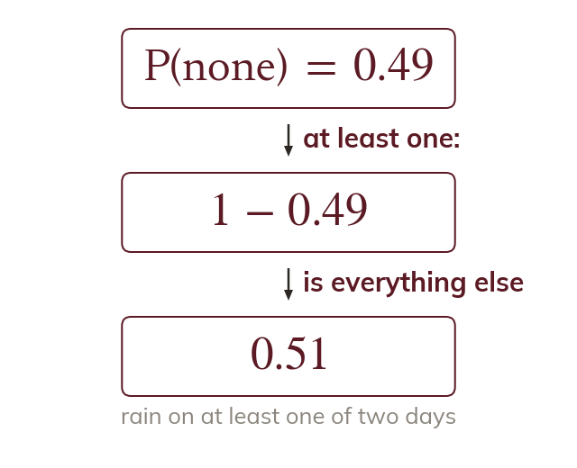
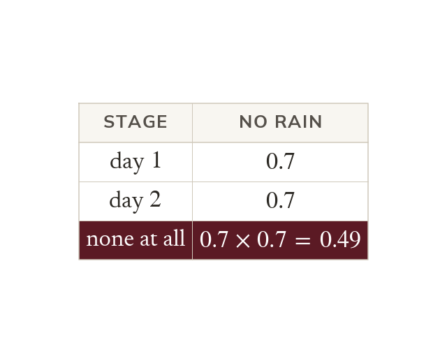
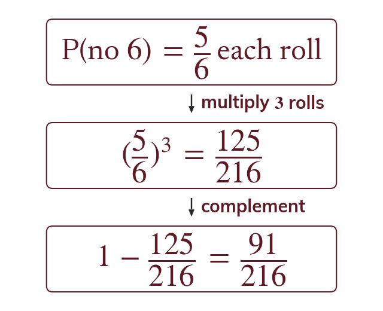
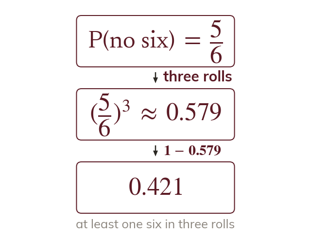
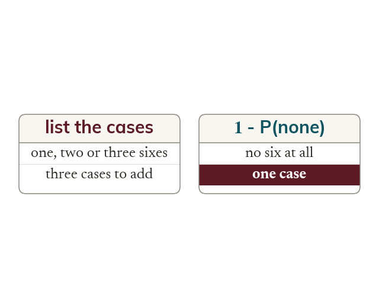
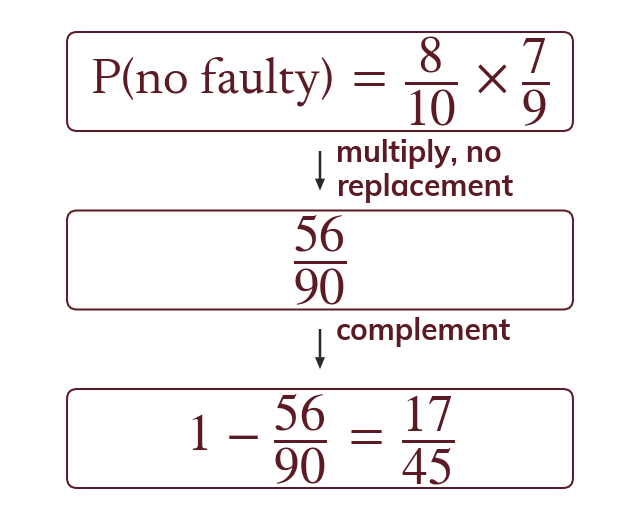

Topic 9.16 · Combined Events and Tree Diagrams · Lesson 6 of 9
At Least One
"At least one" covers a lot of separate cases, and adding them all up is slow and easy to get wrong. Today is about a shortcut: find the probability of none at all, then subtract from
By the end you’ll know…
'At least one' covers every outcome except none at all.
So P(at least one) - P(none), which is usually far quicker than adding the separate cases.
P(none) is the product of the probabilities of it not happening at each stage.
A multi-step problem may combine this with tree paths, adding the relevant path probabilities.
By the end you can
G6Find the probability of at least one occurrence using the complement.
G6Solve multi-step problems using tree diagrams.
Work down the page at your own pace. Write every answer in your book first, then click to check it.
01
Do Now
About 5 minutes
1
Find
2
Multiply by by
Remember these?
LAST LESSONA bag has red and blue, total. Two are drawn without replacement. Find P(blue then blue).
LAST WEEKA map has a scale of 1:50000 Two towns are cm apart on the map. Find the real distance in km.
cm km.
LAST TERMConvert a speed of m/s to km/h.
km/h.
LAST YEARA die is rolled once. Find P(rolling a or a
02
Learn
Read each card, then follow the worked examples one step at a time.

The at-least-one shortcut
At least one is everything except none. So P(at least one) - P(none).
"At least one" covers every outcome except none at all. So P(at least one) - P(none), which is usually far quicker than adding the separate cases.

Finding P(none)
P(none) is the product of the probabilities of it not happening at each stage. A multi-step problem may combine this with tree paths, adding the relevant path probabilities.
AT LEAST ONE 6
A die is rolled times. Find P(at least one

Use the complementP(at least one - P(no
Multiply for rolls
P(at least one
YOUR TURN · a
A coin is flipped times. Find P(at least one head).
P(no heads) ;
YOUR TURN · b
A spinner has P(win) It is spun times. Find P(at least one win).
P(no wins) ;
YOUR TURN · c
A machine part fails with probability independently, on each of attempts. Find P(at least one failure).
P(no failures) ;
YOUR TURN · d
A die is rolled twice. Find P(at least one even number).
P(no evens) ;
03
Check your understanding
Pick an answer. If it's wrong, the feedback tells you which mistake it was.
A coin is flipped times. Find P(at least one head) using the complement.
Not quite. is P(no heads). Now
Yes. P(no heads) so
Not quite. Use the complement: − P(TTT)
Not quite. Three flips:
What does P(at least one) mean?
Not quite. At least one includes two, three and more.
Yes. One or more: everything except none.
Not quite. That's all of them. At least one means one or more.
Not quite. Zero is the opposite. At least one is everything except none.
P(rain on a day) Find P(at least one rainy day) over independent days.
Yes. P(no rain) so
Not quite. is P(no rain). Take it from :
Not quite. Don't add. Use − P(no rain)
Not quite. is rain on both days. At least one:
04
Practise
mark as you go
Checkpoint. A die is rolled times. Find P(at least one using the complement.Show your teacher before you go on
1
A coin is flipped times. Find P(at least one head).
P(no heads) P(at least one)
2
P(win) on each go. Find P(at least one win in goes).
P(no wins) P(at least one)
3
A die is rolled times. Find P(at least one even number).
P(no evens) P(at least one)
4
P(rain) each day, independently. Find P(at least one wet day in days).
P(no rain) P(at least one)
5
Lee says P(at least one in two rolls) Why is this wrong? Find the probability.
It counts the double six twice
EXT
How many times must a die be rolled for P(at least one to be more than ?
rolls: rolls: rolls
05
Learn
Read each card, then follow the worked examples one step at a time.

Multi-step problems
A multi-step problem may need a tree to find P(none). Then use - P(none) as before.
A multi-step problem may combine the at-least-one shortcut with tree-diagram paths from earlier lessons, when P(none) itself needs a tree to work out.

Choosing the method
For "at least one", find P(none) first. It is almost always faster than adding every case.
Whenever a question asks for "at least one", checking P(none) first is almost always faster than listing and adding every qualifying case.
FAULTY BULBS
A box has faulty and working bulbs, total. Two are drawn without replacement. Find P(at least one faulty).

Use the complementP(at least one faulty) - P(no faulty)
Multiply along the pathDependent: no replacement.
P(at least one faulty)
YOUR TURN · e
A bag has red and blue, total. Two are drawn without replacement. Find P(at least one red).
P(no red) ;
YOUR TURN · f
A spinner has P(lose) It is spun times. Find P(at least one win).
P(no wins) ;
YOUR TURN · g
A box has faulty and working, total. Three are drawn without replacement. Find P(at least one faulty).
P(no faulty) ;
YOUR TURN · h
A die is rolled times. Find P(at least one giving your answer to decimal places.
d.p.)
06
Check your understanding
Pick an answer. If it's wrong, the feedback tells you which mistake it was.
A box has faulty and working, total. Two are drawn without replacement. Find P(at least one faulty).
Not quite. is P(none faulty). Take it from :
Yes. P(none) so
Not quite. That's both faulty. Use − P(none faulty).
Not quite. That's exactly one. Include both faulty, or use − P(none).
Why is the complement usually faster than listing every "at least one" case directly?
Not quite. P(none) can be anything. It's quicker because there's only one "none" path.
Yes. One path for none, several for at least one.
Not quite. You still multiply. It's quicker because there's only one path to find.
Not quite. It is: one path instead of several.
A die is rolled twice. Which is P(at least one ?
Not quite. That's both. At least one − P(no
Yes. − P(no on either) covers every case with a
Not quite. A on the second counts too. Use − P(no
Not quite. Adding counts twice. Use − P(no
07
Practise
mark as you go
Checkpoint. A box has faulty and working bulbs, total. Two are drawn without replacement. Find P(at least one faulty).Show your teacher before you go on
1
A box has faulty and working bulbs. Two are taken without replacement. Find P(at least one faulty).
P(none faulty)
2
A bag has red and blue counters. Two are taken without replacement. Find P(at least one red).
P(no red)
3
A bag has red and blue counters. Three are taken without replacement. Find P(at least one red).
P(no red)
4
P(late) each day, independently. Find P(late on exactly one of three days).
Paths LNN, NLN, NNL Each:
5
A box has faulty and working parts. Two are taken without replacement. Find P(both the same type).
P(FF) P(WW)
EXT
Three dice are rolled. Find P(at least two show the same number).
P(all different)
08
Exit ticket
On paper, on your own, then check
1
A coin is flipped times. Find P(at least one tail).
2
A spinner has P(win) It is spun times. Find P(at least one win).
3
A box has faulty and working, total. Two are drawn without replacement. Find P(at least one faulty).
Finished? Next lesson: 9.16.7 Averages from Grouped Data.
Practise more
After the lesson, or whenever you want more
Dr Frost
Log in, then search for a code to practise that skill.
353iDetermine the probability of at least one occurrence of an event given a larger number of trials.
354cDeal with multiple different chains of outcomes involving successive dependent events.